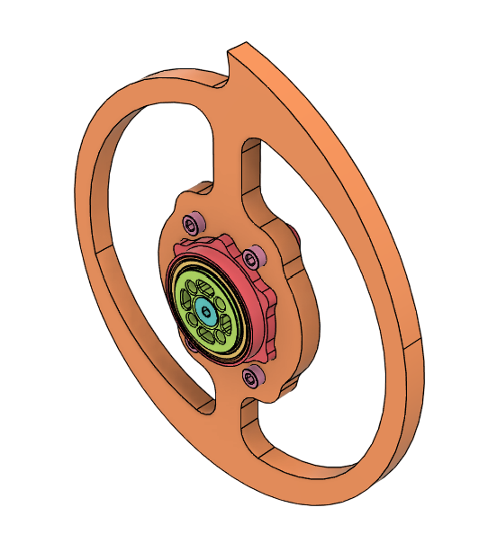

ReBoot v4
changes from v3
ReBoot version 4 is a redesign for increased durability and weight-efficiency, especially considering the revision to the SPARC rules (v1.5), which changes the nontraditional locomotion weight bonus for shuffler-type bots from 150% to 125%. This means ReBoot version 4 will have to be 0.75 pounds lighter than its previous versions, a great opportunity to reduce the amount of air inside the bot. The fourth overhaul redesign will be built around these major changes:
- transition from a belted motor system to a hubmotor system, using a Just Cuz Robotics Hub Motor
- have one weapon blade instead of two, to accommodate the hub motor's design and decrease weight
- lower weapon to move bottom point of rotation closer to ground, and decrease height of uprights
- decrease height of upright ears, and double-check that the bot will be able to drive upside-down
- decrease number of standoffs holding "sandwich" together
- use steel for the bottom plates instead of polycarbonate
- redesign and re-machine metal CAMs
- decrease height of chassis
- use an AM32 weapon ESC for more torque at startup
- reprogram all ESCs so they all sing the same song, instead of one singing Iron Man and the other singing an unbelievably long unknown song every time I turn on the bot
- design special mounting for magnets
ReBoot v4 is planned to make its debut on March 29, 2025 at the UofA Sonoran Showdown: smaller, denser, and fiercer than ever before.